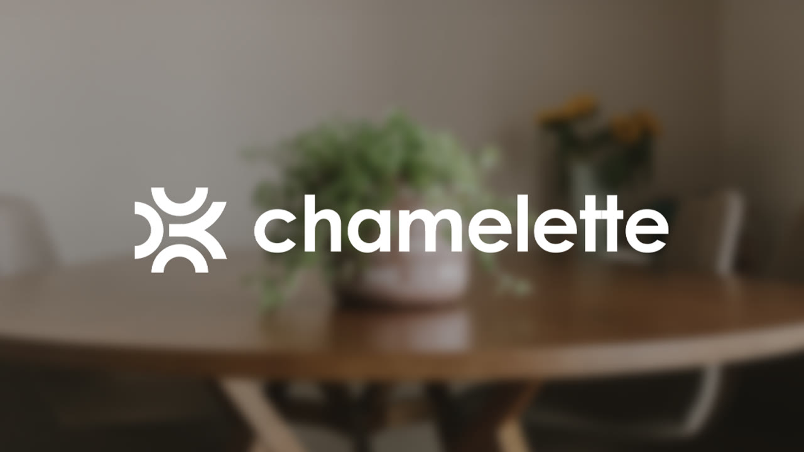
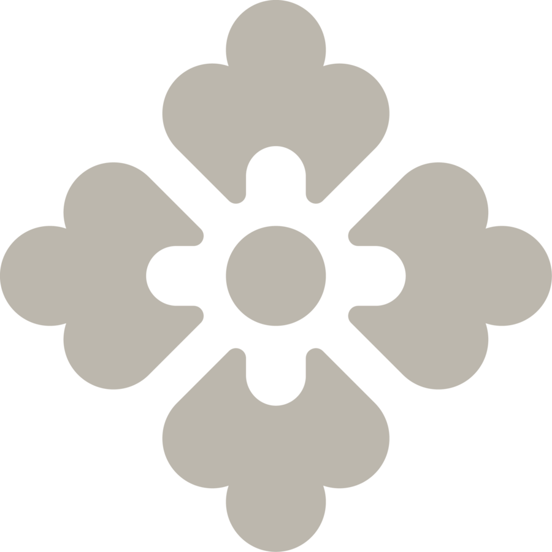
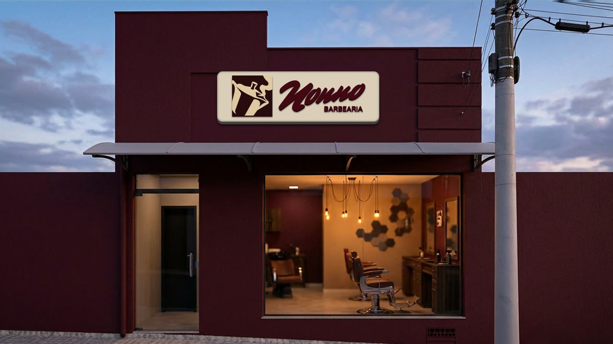
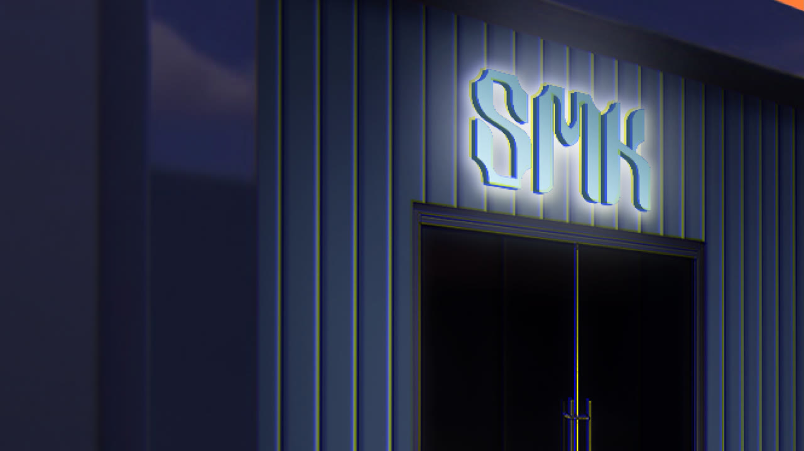
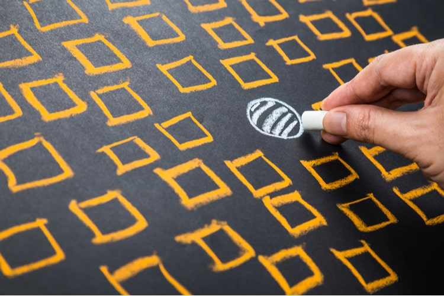
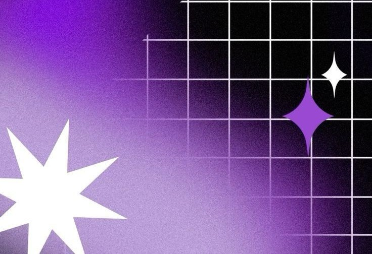
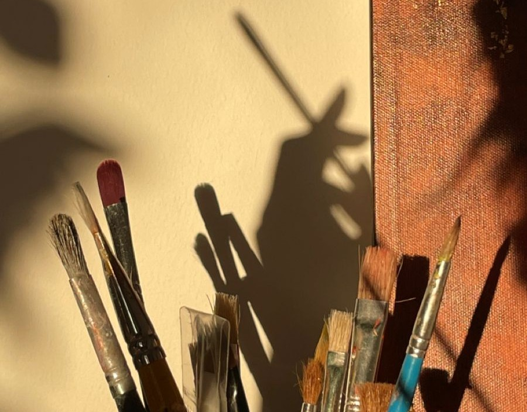
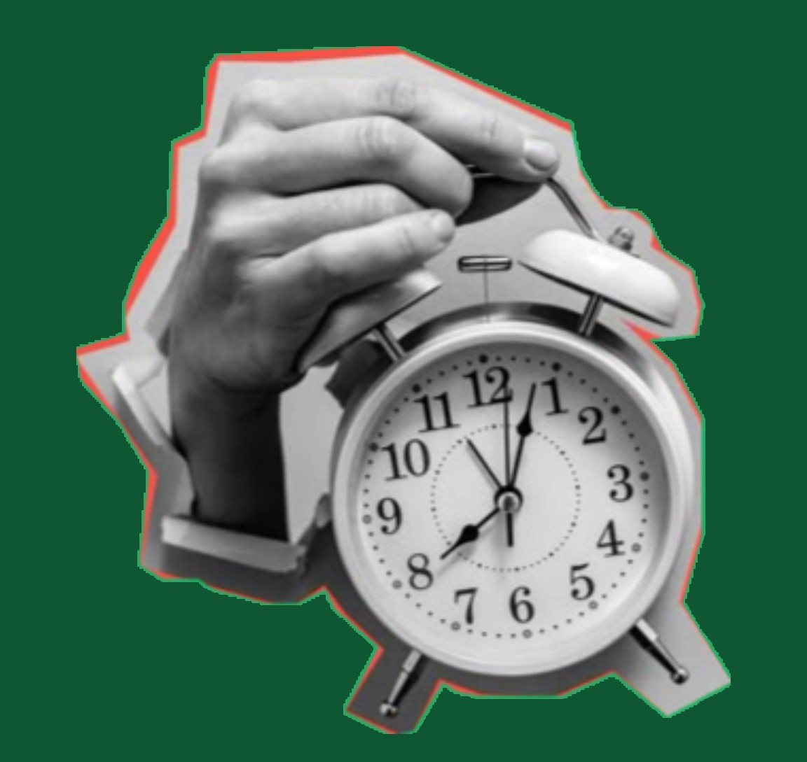
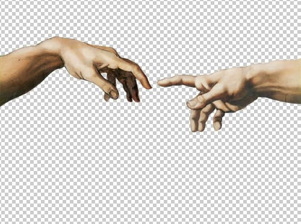

Projeto selecionado · 01
Chamelette
Uma amostra da linguagem construída para a marca, reunindo ritmo, composição e presença visual.


Projetos selecionados
Projeto selecionado · 01
Uma amostra da linguagem construída para a marca, reunindo ritmo, composição e presença visual.

Projeto selecionado · 02
Identidade apresentada em escala editorial, com espaço para incorporar estratégia, aplicações e novos materiais do case.

Projeto selecionado · 03
Um recorte dinâmico que transforma os elementos do projeto em uma experiência visual direta e memorável.

Sobre nós
A OulDesign entende o mercado para traduzir, de forma criativa, a cultura de cada empresa.
Estratégia e expressão caminham juntas: investigamos a essência, construímos uma linguagem própria e contamos histórias por meio do design.
Com dez anos de experiência, cada projeto nasce do contexto e evita respostas genéricas.
Conheça nosso jeito de criar ↗Recortes do portfólio
Os materiais reais substituem as logos decorativas e aproximam a apresentação do trabalho entregue pelo studio.
Antes de começar

Essência Minha empresa já tem uma logo. Ainda preciso de branding?A logo é uma parte da identidade. Branding organiza posicionamento, discurso, experiência e percepção para que todas as escolhas da marca caminhem na mesma direção.

Coerência O que uma identidade visual realmente muda?Ela transforma estratégia em sinais reconhecíveis. Cor, tipografia, forma e composição passam a comunicar quem a empresa é antes mesmo de uma explicação completa.

Processo Como funciona o processo da OulDesign?Começamos pela escuta e pelo contexto. Depois definimos direção, exploramos linguagens e construímos um sistema visual coerente com a cultura e os objetivos do negócio.

Ritmo Quanto tempo leva um projeto?O prazo depende da profundidade e das entregas combinadas. Depois da conversa inicial, o projeto recebe um cronograma claro, com etapas de apresentação e validação.

Presença Por que escolher a OulDesign?Porque não buscamos uma resposta genérica. Com dez anos de experiência, mergulhamos na cultura de cada marca para criar uma identidade autoral, estratégica e presente.
Vamos conversar